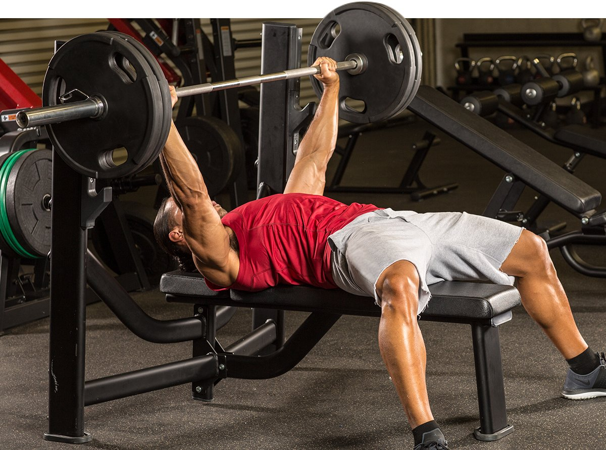
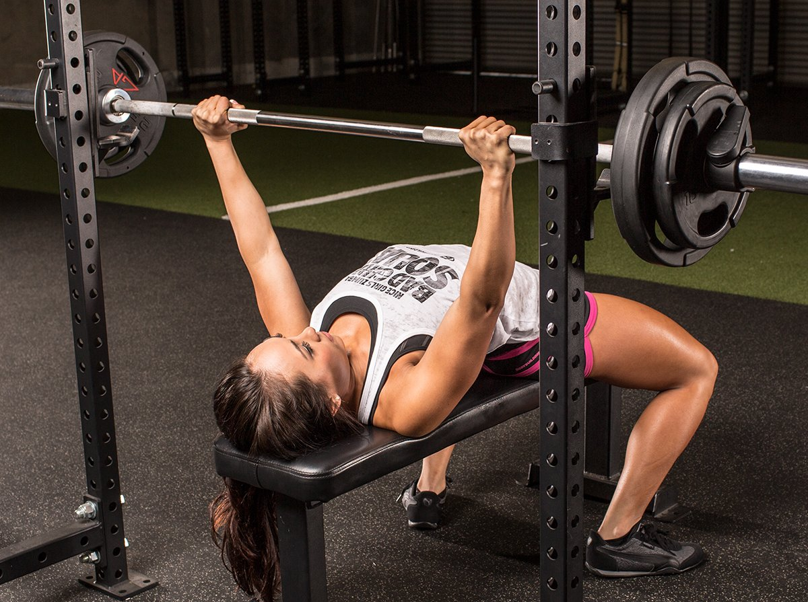

You may have never given much thought to how wide apart you place your hands on the bar when performing a bench press, but simply moving your hands in and out on the bar has big effects. It can direct the stimulus from your upper to lower pecs, or from the inner to outer pecs. Your grip can even alter the range of motion and how much weight you can push.

With your hands just 10-12 inches apart, this is similar to what you'd use for the close-grip bench press during arm training. It hits the triceps dead-on and targets the inner-pec fibers especially well. Here, the forearms are not perpendicular to the floor; they form a slightly acute angle (less than 90 degrees). For most people, this is just inside shoulder width.

With your hands much closer to the weight plates, the angle of your forearms is beyond perpendicular to the floor. That shifts the emphasis to your chest—particularly the outer pecs—and puts a greater load on your shoulders. You get much less triceps activity done this way, but you can usually push more weight, since you use a lot of chest and the bar only travels a short distance. However, some people find that this extra strength comes at the expense of shoulder pain.

A common option for bench pressers is a position about halfway between the close and wide grips. Here, your forearms are about perpendicular to the floor when the bar is in the bottom position. For most people, this is the most comfortable width. And the best grip for overall pec development is the one you're comfortable doing again and again, right?

The fourth choice is a reverse grip on the barbell. To make this grip work, your forearms must be close to perpendicular, and your elbows must be close to your sides. This variation recruits your triceps heavily, but it has also been shown to emphasize the upper pecs well.
Which One Should I Use?
Each variation has its place, depending on your goals. Don't feel like you have to go with a normal grip all the time for your big sets, treating the others simply as accessory moves. You can absolutely hit reverse grip or close grip hard for a cycle or two. The latter is the primary push for much of Steve Cook's Modern Physique training plan, for instance.
- To hit triceps: close grip or reverse grip
- To hit upper chest: reverse grip
- To hit inner chest: close grip
- To push maximum weight: wide grip
- To hit outer chest: wide grip
- For shoulder health: normal or close grip